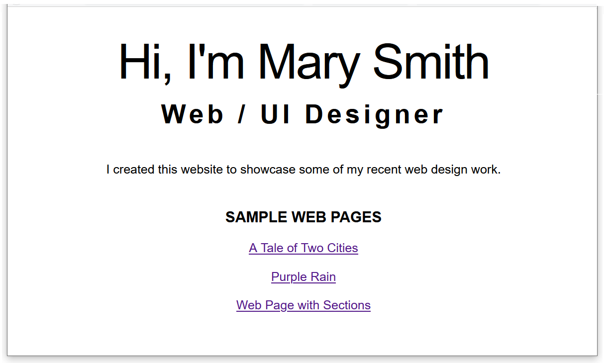

Learning Goals
At the end of this Tutorial, you will be able to:
- Understand the importance of adding negative space between elements in front-end design.
- Use the CSS padding property to apply spacing around the HTML body and section tags.
- Add media queries to a CSS file for the 768px breakpoint.
- Use media queries to create responsive layouts on a web page.
About Responsive Web Design (RWD)
As a web designer, you have no control over the size of the screen on which your web pages will be displayed.

The term viewport is used to describe that area of a web browser screen that displays a web page’s content. It excludes any menus, web address bars, bookmark bars, scroll bars or other similar elements.

Creating web pages that respond or ‘scale‘ appropriately to the viewport size of a user’s device is called Responsive Web Design (RWD). Responsive web pages adjust the layout, placement, and size of their elements so that the page looks good no matter what screen it’s being viewed on.
About screen resolution
Screen resolution refers to the number of pixels displayed on a screen. It is typically expressed as (horizontal pixels) x (vertical pixels).
For tablets and mobiles, it is important to take account of the device orientation, where portrait means ‘standing up’ and landscape means ‘sideways’.
About breakpoints
When designing for such a wide range of viewport sizes, web designers rely on what are called breakpoints. These are the viewport widths at which the page layout needs to change.

For example, a three-column layout may display nicely on larger screens – but on mobile devices it will necessary to transform the layout into just a single column.
For most designs, however, it is sufficient to use just one breakpoint: 768px.
This is the viewport width of an Apple iPad in portrait mode. So:
- Big viewports: These are viewports that are 768 pixels wide or wider. In other words, viewports with a min-width value of 768px.
- Small viewports: These are viewports that are 767 pixels wide or narrower. In other words, viewports with a max-width value of 767px.
About ‘negative space’ in web page layout
The term white space comes from the world of print design where content – text and images – are printed (mostly) on white-coloured paper. White space means space in a design layout that is empty. Although it contains nothing, white space is just as important as any of the content it surrounds for this reason: it makes text more inviting to read.
Because electronic screens – and modern printing processes – can create almost any background colour, the original term of white space is increasingly known by the alternative term of negative space.
Here are some examples of negative space in use in web design.

Below are links to a number of helpful resources about negative space in web design.
Whitespace in Web Design: What It Is and Why You Should Use It
From Gisele Muller on Treehouse.
A Guide to Effective Use of White Space in Web Design
From Joanne Amos on Flywheel.
White Space Design: 20 Striking Examples and Best Practices
From Joseph Downes on Just in Mind.
What Is Whitespace? 9 Websites to Inspire Your Web Design
From Karla Cook on HubSpot Marketing Blog.
White-Space at Work: Why Less is More in Your Website Design
From Sherice Jacob on Crazyegg Blog.
White Space - A Perfect Option For Improving Usability In Web Designs
From Isabella Morris on Usability Geek.
About media queries
When combined with breakpoints, media queries use the @media rule to create conditional style rules in CSS. In other words, a block of CSS properties will be applied to the linked web page only if a certain condition is true.
Media queries are most commonly used to adjust the horizontal and vertical spacing on a web page according to the viewport width.
For example, suppose you wanted ‘white space’ at the left and right of the web page content.
- On ‘big screens‘ (768px or wide), you might want the web page content to fill only 60% of the viewport width.
- On ‘small screens‘ (up to 767px width), however, you might want the web page content to fill 90% of the viewport width.

To achieve this, you would enter the following two media queries in your stylesheet.

In the above example, the media query for desktop screens is entered first in the CSS file, followed by the media query for mobile screens. But the order in which media queries appear in a stylesheet does not matter.
Note that all media queries have both a start point and an end point.
It is not enough to ‘open’ them. You must also ‘close’ them.
If you fail to close a media query, all the style rules that follow it in the remainder of the CSS file – which could be many hundreds of lines long – will be controlled by the unclosed media query.
Below are two media queries, but with the style rule for the h1 selectors written on a single line.

Note the two pairs of curly braces:
- An inner pair of opening and closing curly braces encloses the style rules(s) for the CSS selector, in this case, h1.
- And an outer pair of opening and closing curly braces that encloses the media query.
It is a good idea to use the Tab key along wth VS Code’s indentation guides (thin vertical lines) to ensure you do not forget the add the correct number of opening and closing braces when working with media queries in your stylesheets.

Setting the page content width
By default, web browsers add a small amount of white space at the left and right edges of the web browser window. You can see this in the sample web pages you have created and styled. One example is shown below.

Let’s add some wider, more user-friendly negative spacing to your sample web pages. To do this, you will use the CSS property called padding.
- In VS Code, open the following sample stylesheet file. websites/exercises/assets/css/style-1.css
- At the top of the stylesheet, just under the == WEB BROWSER RESETS == block, copy-and-paste the following:
/* Desktops */ @media (min-width: 768px) { body { padding: 4% 20% } } /* Mobiles */ @media (max-width: 767px) { body { padding: 8% 5% } }
The upper part of your three CSS files should now look as shown below.
- Repeat these steps for your style-2.css and global.css stylesheets.
- In VS Code, open the following sample stylesheet file. websites/exercises/assets/css/style-3.css
- At the top of the stylesheet, just under the == WEB BROWSER RESETS == block, copy-and-paste the following:
/* Desktops */ section { padding: 4% 20% } } /* Mobiles */ @media (max-width: 767px) { section { padding: 5% 5% } }
Your four web pages with negative spacing should now look as shown below.



In simple terms, you have:
- Entered two style rules in the same CSS file: one rule for ‘big’ screens, and the other rule for ‘small’ screens.
- Included with each style rule a condition statement that tells the web browser: only apply this style if the user’s viewport is less than or greater than a certain width.
All your four web pages now display responsively on mobile and desktop or laptop screens.
Uploading your work to GitHub
You are now ready to uppload your work to your account on Github.
- Open a new tab in your web browser and go to Github.com. If you are not already signed in to your Github account, sign in now.

- On your Github home page, click the name of the repository (‘repo’) that holds your web pages. Its name will look as follows, where username is your chosen username on Github.
username.github.io

- On the next Github screen displayed, near the right of the screen, you can see a button named Add file. Click on it.

- From the dropdown list displayed, choose the option Upload files.

- In File Explorer (Windows) or Finder (Apple Mac), drag-and-drop your index.html file and your 📁 assets and 📁 exercises sub-folders to upload them to your repository on Github.

- Scroll down to the bottom of the Github screen, and accept or edit the short message (Add files via upload) in the Commit changes box.
- Finally, click the green Commit changes button to upload your entire exercises sub-folder and all the files it contains.

Your web pages are now published on Github at web addresses similar to the following, where username is the username you have chosen for your Github account:
https://username.github.io/index.html
– or simply –
https://username.github.io
https://username.github.io/exercises/page-1.html
https://username.github.io/exercises/page-2.html
https://username.github.io/exercises/page-3.html
It may take a few minutes for your uploaded files to appear on Github.